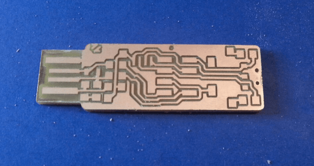
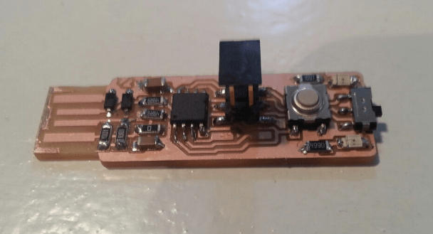
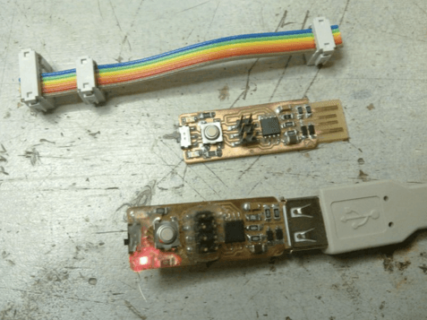

Wk04: 2016/02/16
ELECTRONICS PRODUCTION
0. Assignments for week4
The assignments for week4 were as below;
- Make the Fab (tiny)ISP in-circuit programmer
- Mill the board
- Solder the components on the board
- Set it up for programming
1. Basic Information
PCB fabrication
In week4, we tackled printed circuit board (PCB) fabrication, which is one of basic methods of electronics production.
Printed Circuit Board
PCB mechanically supports and electrically connects electronic components using conductive tracks, pads and other features etched from copper sheets laminated onto a non-conductive substrate. PCBs can be single sided (one copper layer), double sided (two copper layers) or multi-layer (outer and inner layers)
What is Fab ISP?
The Fab ISP is an in-system programmer for AVR microcontrollers, designed for production within a FabLab. It allows us to program the microcontrollers on other boards we make.
Microcontroller
...however, it was Greek to me, sinche electronics production was totally new to me. I add some basic explanation regarding these concepts as below;
Microcontroller
Siting from IoT Agenda - microcontroller,
A microcontroller is a compact microcomputer designed to govern the operation of embedded systems in motor vehicles, robots, office machines, complex medical devices, mobile radio transceivers, vending machines, home appliances, and various other devices.
Microcomputer
Siting from IoT Agenda - microcomputer,
A microcomputer is a complete computer on a smaller scale and is generally a synonym for the more common term, personal computer or PC , a computer designed for an individual. A microcomputer contains;
and housed in a unit that is usually called a motherboard .
- microprocessor (a central processing unit on a microchip )
- memory in the form of read-only memory and random access memory
- I/O ports
- bus or system of interconnecting wires
AVR Microcontroller
AVR Microcontroller is a kind of microcontroller, which was developed and manufactured by Atmel. Most computers have a 32/64-bit CPU running at 1GHz, with 1GB of RAM and 100 GB of storage. This microcontroller runs at 10MHz, have 1KB of RAM and 10KB of storage. However, their small size, lower power consumption and low cost make them a wide range of choices for many projects.
CNC Milling
We used computer numerical controlled(CNC) milling machine: Roland Modela MDX-20 to mill the cupper board this week.

CNC Milling Machine
CNC milling is a specific form of computer numerical controlled (CNC) machining. Milling itself is a machining process similar to both drilling and cutting, and able to achieve many of the operations performed by cutting and drilling machines. Like drilling, milling uses a rotating cylindrical cutting tool.
2. Practice
This week, we tried to make FabTiny ISP, which is a kind of Fab ISP and includes a few extra features such as a target power led and switch, a reset button and a led on the SCK line to indicate communication in progress. I discribe the fabricating process as below;

FabTiny ISP
1. Milling the Board
- Set copper board
Turn the machine on, and fasten the board with the special double tape provided without dust underneath. If there is double tapes, which was pasted previously, on the surfase, strip them off completely before pasting new double tape.
Making the surfase of board clean
- Set Fab Module
Next prepare the 2D milling plan on PC. First, open Fab Module and;- Open milling image on Fab Module
Open Fabmodule and select these setting as below:- Input Format: image(.png)
- Output Format: Roland Mill(.rml)
- Process: PCB trance(1/64) or PCB outline(1/32)
Fab Module
- Set parameter
Next set parameter on Fab Module, which is the most important part, as below.Parameter Trace Outline diameter0.4 0.79 offset-1 1 error1.1 1.1 overlap0.5 0.5 z(mm)-0.1 - top z- -0.6 bottom z- -1.7 cut depth- 0.6 - Set cutting plan by vector image
Next, download correct milling plan of image and import to Fab Module.
Importing milling image
- Open milling image on Fab Module
- Prepare Milling Machine
- Change a milling bit
Set the correct milling bit in as image below. First, use 1/64 to engrave the board, and use 1/32 when you cut the outline.
Changing a milling bit
- Set the height of a milling bit
In this step, be careful allow the machine move without problems. Fitst, put the bit down to the ground and fix it tightly. - Set the postion of cutting zero point from Fab Modules
Move the postion of bit and set it at starting point. Zero point is an absolute position in the lower left corner. We need to play with the X and Y values to find where we want to start.
- Change a milling bit
- Milling circuit board
After all setting, we can start mill, however, before starting all the milling process, once stop the machine and check if it is going correctly or NOT.Milling Scene
Milled copper board
Frequent Mistake!
If you set the parameter of Fab Module incorrectly, or set the position of the bin wrongly, the milling will not be executed completely; some copper will remain on the surfase without milling or board will not be cut as below. Actually, I had mistakes three times because the setting of the bin was too low to move smoothly.
Copper cut not enough
2. Solder the components on the board
Now, we could prepare the circuit board for FabTiny ISP, and next have to soleder and fix the parts to the board. Image as below is the blue print of it, and solder them as following instructions.
- Prepare parts
Before starting soldering, prepare the parts which will be implemented to the board from your inventory. After thenm solder the components to the board using a soldering iron and solder. Use the handy copper wire to desolder.
First, prepare the components as following inventory list.
Bill of FabTiny ISP
Part Value Package inventory ideal R1 1 Kilo-Ohm 2.2 Kilo-Ohm SMD-1206 R2 1 Kilo-Ohm SMD-1206 D1 3.3-Volt Zener 3.6-Volt Zener SMD-SOD123 D2 3.3-Volt Zener 3.6-Volt Zener SMD-SOD123 C1 10 micro-Farad SMD-1206 R3 49 Ohm 68 Ohm SMD-1206 R4 49 Ohm 68 Ohm SMD-1206 R7* 0 Ohm PTC 0.5 Ampere SMD-1206 C2 100 nano-Farad SMD-1206 IC1 ATTiny45 ATTiny85 SMD-SOIC8 JP1 2x6 ISP 2x8 header SMD pinheader S2 B3SN-3112 SMD tactile switch S1 AYZ0102AGRLC SMD slide switch R5 1 Kilo-Ohm SMD-1206 LED1 red LED SMD-1206 R6 499 Ohm 470 Ohm SMD-1206 LED2 green LED SMD-1206
...Oh, however, it was hard for me to understand "Reference designator", which I didn't even call so, then I googled the definion of each parts as below. If you want to know further, Wikipedia - Reference designator is easy to understand and useful for you.
Designator Component Type Note RRegister Acting to current flow, and, at the same time, to lower voltage levels within circuits DDiode Having low (ideally zero) resistance to the flow of current in one direction, and high (ideally infinite) resistance in the other. CCapacitor/Condenser Used to store electrical energy temporarily in an electric field ICIntegrated circuit a set of electronic circuits on one furtehr smaller plate JPJumper a short length of conductor used to close a break in or open, or bypass part SSwitch just swich LEDLight-emitting diode a p-n junction diode, which emits light when activated
Next, pick these components from the inventory, and arrange them not to lose sight of them. It is better put them on a white paper or electric parts pack, and add tag indicating what it is to them.Preparation of parts
- Solderling
Next, solder each components to the board carefully. Regarding the soldering step, follow the instrucitons and proccess of this page: FabTiny ISP Stuffing the board
.
Soldeling scene
- Debugging
After soldering, debug usingmultimeter, which is an instrument designed to measure electric current, voltage, and usually resistance, typically over several ranges of value.
Put its bins on the surfase of copper board, and check if there are error or NOT by the beeping which rings when the circuit is soldered to wrong parts and connected with each other wrongly.
Multimeter
If there are no error in debuggin, you can complete the soldering part, and the image as below is a complete version of FabTiny ISP.
Production of FabTiny ISP
3. Set the board up for programming
To be able to program the microcontroller we need to set a starting program on the chip. That allows us to communicate with it.
That can be done with a AVR programmer, for instance, Arduino UNO, which can be bought off the shelf but it can also be done with another FabTiny ISP which has been programmed already.
I followed the programming instruction given on the tutorial page: Programming the firmware.
- Download
First, download neccessary files to your working directory from links below:
Also, before implementing the programm to your FabTiny ISP, you have to set the PATH following the directions of this page: AVR Setup: how to install AVR dev tools.
In my case, I usually use Z-shell(zsh) as general shell, so it made me a bit confusing and took some time to fix the problems. Before using the AVR firmware, you have to set the PATH to your shell to use the command of AVR.
How to set the path to bash/etc is as below, and if you use zsh, you have to open.zshenvand add PATH to the file.
In the new Terminal window, type in echo
$SHELLand press return.
If the output is/bin/bashthen type the following command:
echo 'PATH=$PATH:/usr/local/bin' >> ~/.bash_profile
all on one line. Press return.
If the output is/bin/cshor/bin/tcshthen type the following command:
echo 'set path = ($path /usr/local/bin)' >> ~/.cshrc
all on one line. Press return.
Close any Terminal windows and open up a new one. This makes sure the.bash_profileor.cshrcis reloaded. Now type inecho $PATH(for bash) orecho $path(for t/csh) you should get something.
The important thing is that at the end of the line is/usr/local/bin - Programming
After all setting, you can implement programming on your FabTiny ISP by using another FabTiny ISP.Programming by FabTiny ISP
Outline of this page
1. Basic Information
2. Practice
- milling the board
- soldeling components
- programming
Lecture Material for Wk4
Lecture Note
Tools
- CNC milling machine: Roland Modela MDX-20
- Fab Module
- Solder bar
- Multimeter
- FabTiny ISP
- Fab ISP firmware:
Download from this page - CrossPack for AVR Development
Learning Support
(Tutorial of this class)-
FabTiny ISP:
Tutorial of making FabTiny ISP -
Fab ISP Key Parts Layout:
This is to accompany Andy Bardagjy's version in "USB key" which is version 2.3
- Using the Modela to Mill PCBs
- Fab ISP: Electronics Production
- Fab ISP: Programming
- Attiny44A Fuses
- Use an Arduino UNO as an ISP to program your first FabISP
- Making PCBs with a CO2/Fiber laser cutter (Trotec)
- Fab ISP: Usb 3d printed adapter
Videos of Wk4
Here you can find this weeks's lectures on VIMEO:
(2016.02.17)
(2016.02.24)
Checklist for Wk4
Assignments:
- Make the Fab (tiny)ISP in-circuit programmer.
Learning outcomes:
- Describe the process of production
- Demonstrate correct workflows and identify areas for improvement if required
Have you:
- Shown how you made the board
- Explained any problems and how you fixed them
- Included a ‘hero shot’ of your board